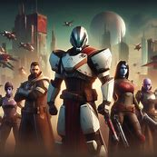

Storyline Central Online BookStore!
Enjoy these short story collections. Click the link to download
Download Story: Tales of Zavala
In the vast expanse of the cosmos, on the edge of the European Dead Zone, a Guardian named Zavala stood, his gaze fixed on the horizon. His Ghost, a small, hovering entity named Light, was by his side.
"Zavala," Light began, "we've received a distress signal from the Tower. It seems Ikora Rey and Cayde-6 are in trouble."
Zavala, a Titan with a reputation for his stoic demeanor, nodded. "Let's not waste any time then."
They transmatted to the Tower, arriving just in time to see Ikora and Cayde-6 surrounded by a horde of Cabal. Zavala raised his hand, summoning a Void shield that blocked incoming fire, giving Ikora and Cayde-6 a moment to breathe.
"Nice timing, big guy," Cayde-6, the ever-charming Hunter, quipped as he reloaded his hand cannon, the Ace of Spades.
Ikora, the Warlock Vanguard, nodded in agreement. "We could use the help."
Together, they fought off the Cabal, their combined might too much for the alien invaders. Zavala's shields, Ikora's Nova Bombs, and Cayde-6's Golden Gun turned the tide of the battle.
As the last Cabal fell, the trio stood triumphant. They were more than just Guardians; they were comrades, bound by a shared destiny.
"Another day in the life of a Guardian," Zavala said, looking at his companions.
"Couldn't have said it better myself," Cayde-6 replied with a grin.
And so, they continued their watch, ready to face whatever the universe threw at them next. For they were Guardians, defenders of the Last City, and together, they were unstoppable.

Summary: A story centered around the Vanguard Titan, Zavala from the game Destiny 2...
Download Story: Tales of Cayde-6
In the heart of the Last City, Cayde-6, the exo Hunter Vanguard, was up to his usual antics. He was a rogue, a charmer, and a hero all rolled into one.
"Cayde, you can't just gamble away your glimmer on a game of chance," Zavala, the Titan Vanguard, chided him.
Cayde-6 just grinned, his mechanical face somehow managing to convey a sense of mischief. "Zavala, my friend, life's a game of chance. Might as well have some fun with it."
Just then, an alarm blared. The city was under attack. Without missing a beat, Cayde-6 was on his feet, his hand cannon, the Ace of Spades, at the ready.
"Time to earn our keep," he said, sprinting towards the chaos.
He moved through the city, a whirlwind of destruction. His Golden Gun blazed, cutting down enemies with ruthless efficiency. He was a Hunter, a lone wolf, but he was also a protector, a guardian of the Last City.
As the dust settled, Cayde-6 stood amidst the wreckage, a smirk on his face. "Well, that was fun," he said, holstering his weapon.
Back at the Tower, he was greeted with cheers. He shrugged it off with a laugh, but there was a glint of pride in his eyes. He was more than just a gambler and a rogue. He was a hero, a Guardian, and he wouldn't have it any other way.
Summary: A story centered around the former Vanguard Hunter, Cayde-6 from the game Destiny 2...
Download Story: Tales of Ikora
In the quiet solitude of the Tower's library, Ikora Rey, the Warlock Vanguard, was engrossed in ancient texts. Her mind was a whirlwind of knowledge, always seeking, always questioning.
"Ikora, you need to rest," her Ghost, a small hovering entity named Wisdom, advised.
Ikora looked up, her eyes reflecting the soft glow of the holographic texts. "Rest is for the weary, Wisdom. Knowledge waits for no one."
Just then, an alarm echoed through the Tower. The city was under attack. Ikora stood, her robes billowing around her. "It seems our studies will have to wait."
She moved with a grace that belied her power, her Nova Bomb ready at her fingertips. She was a force to be reckoned with, her Void energy decimating the enemy forces.
As the dust settled, Ikora stood amidst the wreckage, her face calm. "Knowledge is power, Wisdom. But sometimes, power must be wielded."
Back in the library, she returned to her texts, her thirst for knowledge unquenched. She was more than just a scholar. She was a warrior, a Guardian, and she would stop at nothing to protect the Last City.
Summary: A story centered around the Vanguard Warlock, Ikora from the game Destiny 2...
Download Story: Tales of the Exo Stranger
In the cold, desolate landscape of Europa, a figure stood alone. She was known only as the Exo Stranger, a mysterious time-traveler with no Ghost at her side.
"Time is a funny thing," she mused, her voice echoing in the silence. "It's always moving, always changing. But some things... some things are constant."
Suddenly, a group of Fallen attacked. The Exo Stranger was ready. Her pulse rifle, No Time to Explain, hummed with energy as she took them down one by one.
As the last Fallen fell, the Exo Stranger looked around. "Time may change, but the fight... the fight is always the same."
She disappeared then, her form fading away as if she was never there. But her words lingered, a reminder of the constant battle against the Darkness.
Summary: A story centered around Elsie Bray AKA the Exo Stranger, sister to Anna Bray from the game Destiny 2...
Download Story: Tales of Anna Bray
On the red sands of Mars, Ana Bray, a Hunter and a member of the legendary Bray family, was on a mission. Her Ghost, Jinju, was by her side.
"Ana, we've got incoming," Jinju warned, her sensors picking up a group of Cabal.
Ana grinned, her hand instinctively going to her scout rifle, the BrayTech RWP Mk. II. "Let's give them a warm welcome."
She moved like a storm, her Solar energy lighting up the Martian landscape. Her Golden Gun was a beacon of hope, a testament to the Light of the Guardians.
As the dust settled, Ana looked around. "Mars is safe, for now," she said, her voice filled with determination. "But we'll be ready when they come back."
And so, she continued her watch, her heart filled with the love for her home planet. She was a Guardian, a protector, and she would stop at nothing to keep Mars safe.
Summary: A story centered around Anna Bray, sister to Elsie Bray from the game Destiny 2...